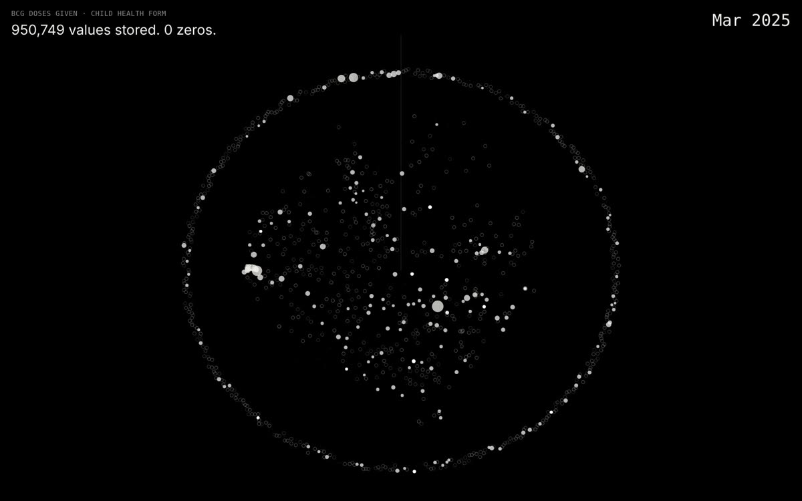
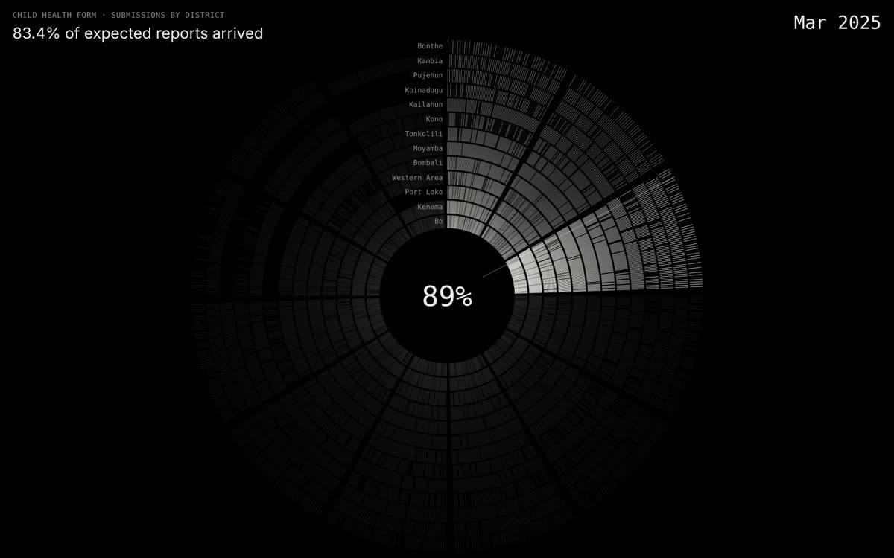
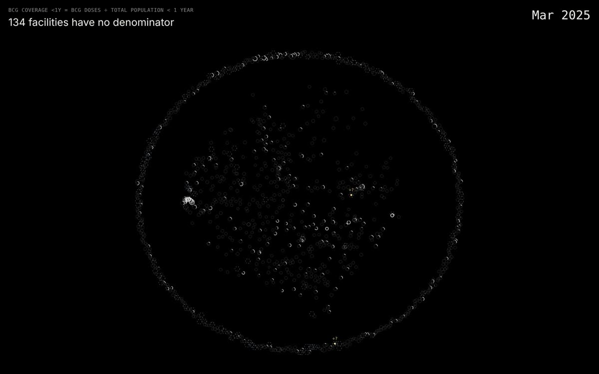
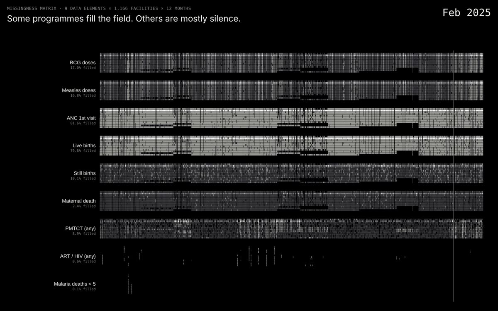

950,749 values · 0 zeros
Zero or missing
DHIS2 does not keep a typed zero unless a field is set up for it. So the export has no zeros at all, only values and blanks, and a blank can mean “none happened” or “nobody wrote it down”.
A national health database, played back as silence. Blank cells, reports that never arrived and populations nobody counted become a map, a rhythm and a drone.
Data is usually read for what it contains. Resonant Gaps reads it for what it leaves out. The project takes exports from heavily measured systems (code repositories, ticket queues, pedigrees, document scans, health records) and treats their nulls, dropouts and omissions as the material of the work.
This issue is the health‑records movement. Its source is DHIS2, the open‑source platform many ministries of health use to collect monthly reports from every clinic in the country. Each report is a promise that something was counted. When a clinic loses power, when a form is sent half empty, when a population figure was never entered, the promise breaks quietly. The national charts still draw a line.
Here the breaks are made audible. A recorded value is a tone. A blank cell is a short burst of noise, because nobody can say whether it means zero or nothing. A missing report is silence, and silence takes up space in the rhythm. The piece is built to be listened to in a room, with the map projected large and the gaps loud enough to notice.
Enter the piece · Sierra Leone (demo)

DHIS2 does not keep a typed zero unless a field is set up for it. So the export has no zeros at all, only values and blanks, and a blank can mean “none happened” or “nobody wrote it down”.

Thirteen districts play one shared pulse. Every missing monthly report is a beat that doesn’t sound. From October the rings thin out, and by December a third of clinics are quiet.

Coverage is doses divided by the people who should get them. One clinic in nine has no population figure, so its percentage can’t exist, yet its doses still count towards the district total.

Antenatal visits are recorded almost everywhere. Maternal deaths are a field left empty. HIV treatment and child‑mortality forms almost never arrive. Each programme sings as loudly as it is recorded.
The same reading can be applied to any DHIS2 instance. New exports are added here as they are made.
| Country | Source | Period | Headline |
|---|---|---|---|
| Sierra Leone (demo) | DHIS2 demo database (HISP, University of Oslo) | Jan–Dec 2025 | 950,749 values, 0 zeros; 134 facilities with no denominator |
The first piece uses the Sierra Leone demo database that the DHIS2 team at the University of Oslo (HISP) runs publicly for training and testing. It mirrors the real structure of Sierra Leone’s health system: 13 districts, 152 chiefdoms and 1,166 facilities. Much of its data is synthetic or regenerated each year, so the patterns are structural, not epidemiological. It shows how DHIS2 records absence, not how healthy anyone is.
The export covers January–December 2025: six monthly reporting forms (Child Health, Reproductive Health, Morbidity, PMTCT, ART, Mortality under 5), population figures and coverage indicator definitions, taken through the public DHIS2 Web API. Only aggregate counts per facility and month are used. There is no personal or patient‑level data.
A blank cell is never shown as zero. Where the export cannot tell the two apart, the piece doesn’t either.